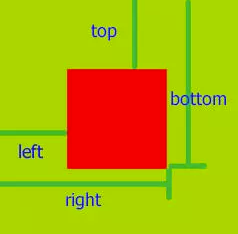
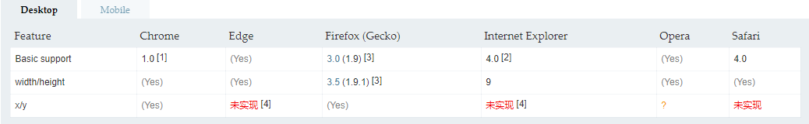
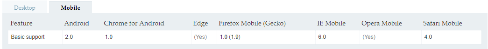

前端性能优化。记录了自己对前端优化的一些经验和理解。
Webpack优化
资源压缩与合并
html压缩。
css压缩。MiniCssExtractPlugin
js压缩。UglifyJSPlugin
文件合并和拆分。合并业务代码文件，拆分公共库文件，避免缓存失效。
图片相关的优化
压缩图片。在线压缩
雪碧图。SpritesmithPlugin
image inline
url-loader和file-loader来配合使用。构建工具通过url-loader来优化项目中对于资源的引用路径，并设定大小限制，当资源的体积小于limit时将其直接进行Base64转换后嵌入引用文件，体积大于limit时可通过fallback参数指定的loader进行处理。
预加载。先用一张极小的图片来代替，等到内容加载完了，再向服务器请求真正的图片并替换，可以有效的减少等待时间。
分离应用程序(app)和第三方库(vendor)
避免缓存大面积失效venders用来打包第三方库。但是如果只是配置这个，app.js并没有变小，因为这个配置只是新打包了一个venders.js文件，本身和app.js没什么关联。venders必须要配合optimization.splitChunks才能实现对app.js里面第三方库的分离。optimization.splitChunks用来剥离充重复引用的包。简单来说就是把app.js和venders.js里面共同引用的包分离出来到common.js，然后在app.js和venders.js留下一个require入口指向common.js。举个例子：index.js中有a.js和b.js，然后a.js引入了xxx.js，b.js也引入了xxx.js。这样如果直接打包xxx.js就会被打包两次，所以通过optimization.splitChunks的配置， xxx.js被抽取出来打包到了common.js里面，而原来a.js和b.js的import地方只留下了一个require入口指向common.js
这样通过venders和optimization.splitChunks的配合就能把一个比较大的app.js文件变成app.js、venders.js、common.js这几个比较小的文件。
需要特别注意的是如果venders里面有，但是app却没有，那么这样splitChunks就不会生效，最终的结果就是导致venders变大。比如在app里面是import uniqBy from 'lodash/uniqBy'但是在venders里面直接配置venders:['lodash']这样的做其实是直接import from 'lodash'，app.js里面并不是这样引入的它只是引入了lodash其中某个方法，那么splitChunks会认为这两个包没有重复。最终的结果就是打包了lodash/uniqBy然后也打包了lodash。
还有，像redux-devtools-dock-monitor这种包也是最好不要放入venders，因为一般情况下redux-devtools-dock-monitor这个只会在开发环境下使用，正式发布的时候一般都会去掉。这样子正式环境在使用的时候，由于splitChunks在app.js里面没有找到redux-devtools-dock-monitor导致venders.js里面多打了这个包进来。1
2
3
4
5
6
7
8
9
10
11
12
13
14
15
16
17{
entry: {
app: './src/index.js',
venders:['react-dom','iconv-lite','immutable','moment','crypto-js']
},
optimization: {
splitChunks: {
cacheGroups: {
commons: {
name: 'vender',
chunks: 'initial',
minChunks: 2
}
}
}
}
}
SplitChunks
1 | { |
HMR
模块热替换(Hot Module Replacement 或 HMR)是 webpack 提供的最有用的功能之一。它允许在运行时更新各种模块，而无需进行完全刷新。
https://www.webpackjs.com/concepts/hot-module-replacement/
Tree Shaking
tree shaking 是一个术语，通常用于描述移除JavaScript 上下文中的未引用代码(dead-code)。1
2
3
4
5
6
7{
"name": "your-project",
"sideEffects": [//需要被排除在外的，就算有无用代码也不会去掉，一样会被编译进去。
"./src/some-side-effectful-file.js",
"*.css"
]
}
Shimming 全局变量
webpack 编译器(compiler)能够识别遵循 ES2015 模块语法、CommonJS 或 AMD 规范编写的模块。然而，一些第三方的库(library)可能会引用一些全局依赖（例如 jQuery 中的 $）。这些库也可能创建一些需要被导出的全局变量。这些“不符合规范的模块”就是 shimming 发挥作用的地方。1
2
3
4
5
6plugins: [
new webpack.ProvidePlugin({
// _: 'lodash',//把lodash赋予全局变量_
join: ['lodash', 'join']//把lodash.join赋予全局变量join
})
],
抽取CSS
它会将所有的入口 chunk(entry chunks)中引用的 *.css，移动到独立分离的 CSS 文件。因此，你的样式将不再内嵌到 JS bundle 中，而是会放到一个单独的 CSS 文件（即 styles.css）当中。 如果你的样式文件大小较大，这会做更快提前加载，因为 CSS bundle 会跟 JS bundle 并行加载。
https://github.com/webpack-contrib/mini-css-extract-plugin1
2
3
4
5
6
7
8
9
10
11
12
13
14
15
16
17
18
19
20
21
22
23
24
25const MiniCssExtractPlugin = require("mini-css-extract-plugin");
const devMode = process.env.NODE_ENV !== 'production'
module.exports = {
plugins: [
new MiniCssExtractPlugin({
// Options similar to the same options in webpackOptions.output
// both options are optional
filename: devMode ? '[name].css' : '[name].[hash].css',
chunkFilename: devMode ? '[id].css' : '[id].[hash].css',
})
],
module: {
rules: [
{
test: /\.(sa|sc|c)ss$/,
use: [
devMode ? 'style-loader' : MiniCssExtractPlugin.loader,
'css-loader',
'postcss-loader',
'sass-loader',
],
}
]
}
}
注意import用法，减少没必要的包。
import uniqBy from 'lodash/uniqBy'：只引入了lodash里面的uniqBy方法。import { uniqBy} from 'lodash'：先把lodash整个对象引入后，再引入uniqBy方法。
最好是第一种不用引入lodash整个对象，只要把相关的函数引入就可以，这样体积可以小很多。
css和js的装载与执行
基本原理
先拿到html文档。然后从上往下，一步一步生成DOM树。包括<link /><script />所有标签。DOM树和CSS树都有之后，进行合并，才会渲染。
css阻塞和渲染
要把css放在head标签里面，置顶。因为css、js资源并发加载在chrome底下，对一个域名，一次最多同时请求6个。如果css不置顶会先请求js。
如果css不置顶，dom先渲染了，但是css还没渲染，这样会有样式跳变。
css会阻塞后面的js的执行。
js 默认引入方式，会阻塞页面渲染，先加载js文件再加载页面
js defer异步，不会阻塞页面的渲染，保证 执行顺序，脚本之间可以有顺序关系。会等dom渲染完再执行。
js async同步，不会阻塞页面的渲染，不保证执行顺序，脚本之间不能有顺序关系。不会等dom渲染完执行，都不一定谁先谁后。
defer和async
先来试个一句话解释仨，当浏览器碰到 script 脚本的时候：
没有 defer 或 async，浏览器会立即加载并执行指定的脚本，“立即”指的是在渲染该 script 标签之下的文档元素之前，也就是说不等待后续载入的文档元素，读到就加载并执行。
有 async，加载和渲染后续文档元素的过程将和 script.js 的加载与执行并行进行（异步）。
有 defer，加载后续文档元素的过程将和 script.js 的加载并行进行（异步），但是 script.js 的执行要在所有元素解析完成之后，DOMContentLoaded 事件触发之前完成。
然后从实用角度来说呢，首先把所有脚本都丢到 之前是最佳实践，因为对于旧浏览器来说这是唯一的优化选择，此法可保证非脚本的其他一切元素能够以最快的速度得到加载和解析。
接着，我们来看一张图咯：

蓝色线代表网络读取，红色线代表执行时间，这俩都是针对脚本的；绿色线代表 HTML 解析。
此图告诉我们以下几个要点：
- defer 和 async 在网络读取（下载）这块儿是一样的，都是异步的（相较于 HTML 解析）
- 它俩的差别在于脚本下载完之后何时执行，显然 defer 是最接近我们对于应用脚本加载和执行的要求的
- 关于 defer，此图未尽之处在于它是按照加载顺序执行脚本的，这一点要善加利用
- async 则是一个乱序执行的主，反正对它来说脚本的加载和执行是紧紧挨着的，所以不管你声明的顺序如何，只要它加载完了就会立刻执行
- 仔细想想，async 对于应用脚本的用处不大，因为它完全不考虑依赖（哪怕是最低级的顺序执行），不过它对于那些可以不依赖任何脚本或不被任何脚本依赖的脚本来说却是非常合适的，最典型的例子：Google Analytics
懒加载和预加载
懒加载或者按需加载，是一种很好的优化网页或应用的方式。这种方式实际上是先把你的代码在一些逻辑断点处分离开，然后在一些代码块中完成某些操作后，立即引用或即将引用另外一些新的代码块。这样加快了应用的初始加载速度，减轻了它的总体体积，因为某些代码块可能永远不会被加载。
路由懒加载
使用react-loadable实现路由延迟加载，加快首屏载入速度。
组件级别的代码分隔 react-loadable
使用React.lazy() 等待组件加载的时候 暂停渲染
PureComponent纯组件
在传入props的时候，仅仅比较浅层的数据变化，深层数据属性变化组件不会更新
深层数据的更新可以通过判断，强行触发组件更新适用场景：组件的state、props相同的情况下，组件的表现应该保持不变，则可以使用React.PureComponent提升性能
1 | import loadable from 'react-loadable' |
图片懒加载
getBoundingClientRect用于获取某个元素相对于视窗的位置集合。集合中有top, right, bottom, left等属性。rectObject = object.getBoundingClientRect();rectObject.top：元素上边到视窗上边的距离;rectObject.right：元素右边到视窗左边的距离;rectObject.bottom：元素下边到视窗上边的距离;rectObject.left：元素左边到视窗左边的距离;rectObject.width：元素的宽度;rectObject.height：元素的高度;



通过监听scroll实践，判断rectObject.top是否到达可视区域高度clientHeight，等到达了再把原来藏在img里面的dataUrl放到src里面，让img请求加载图片。
图片预加载
用<img/>事先加载
用Image img = new Image()来创建
用xmlhttprequest请求的时候把图片打开，让浏览器缓存住这张图片。这种做法会比较精确的控制什么时候需要预加载。但是要特别注意跨域问题。
内存泄漏
用chrome的memory监测是否有内存泄漏
下面以 WeakMap 为例，看看它是怎么解决内存泄漏的。
1 | const wm = new WeakMap(); |
上面代码中，先新建一个 Weakmap 实例。然后，将一个 DOM 节点作为键名存入该实例，并将一些附加信息作为键值，一起存放在 WeakMap 里面。这时，WeakMap 里面对element的引用就是弱引用，不会被计入垃圾回收机制。
也就是说，DOM 节点对象的引用计数是1，而不是2。这时，一旦消除对该节点的引用，它占用的内存就会被垃圾回收机制释放。Weakmap 保存的这个键值对，也会自动消失。
基本上，如果你要往对象上添加数据，又不想干扰垃圾回收机制，就可以使用 WeakMap。
性能分析
用chrome的performance
重绘与回流
回流必定触发重绘，而重绘不一定触发回流。